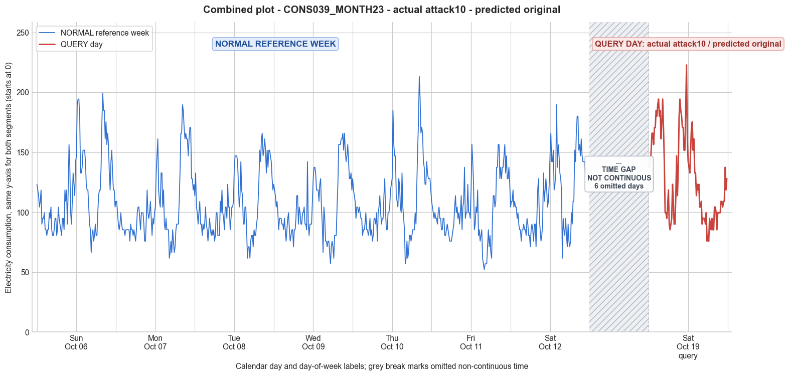

CONS039_MONTH23 · actual attack10 · predicted original
- Pair
- CONS039_MONTH23
- GT
- attack10
- Prediction
- original
- Binary GT
- attacked
- Binary Prediction
- original
- Source
- E010R1
- Parse
- stored
- Date
- 2013-10-19
- Weekday
- Saturday
- Latency
- 2.30 min
- Tokens
- 9928

Final output
Classification: - Original
Prompt
You are a domain expert in smart grid security and electricity theft analysis, with deep knowledge of non-technical loss (NTL) attack patterns in smart meters. You are given: 1. A plot of one week of original (normal) energy consumption for a smart meter, provided as context for the customer's typical consumption behavior. 2. A plot of one day of energy consumption for the same smart meter, which may or may not be manipulated. Below are common attack types, each defined by how consumption values are altered, their impact on magnitude and trend, and their possible technical causes. Attack 0: Generated by replacing all electricity consumption samples with zero values for the entire observation duration. Simulates a scenario where no energy usage is reported at all. May be caused by a total meter bypass or severe meter malfunction. Completely eliminates both the trend and magnitude of the consumption profile. Attack 1: Multiplies the actual energy consumption by a constant random value between (0,1). The lower the factor, the higher the severity. Can be triggered by meter bypass, magnetic interference, reverse current, and false data injection. The consumption trend remains the same but the magnitude is uniformly reduced. Attack 2: Generated by replacing consumption samples with zeros for a random duration. Also known as an on-off attack. Can be caused by full meter bypass, false data injection, and reverse current. Changes both the trend and amplitude. Attack 3: The actual consumption is multiplied by different random factors between 0 and 1, with a unique factor per sample. Similar to Attack 1 but the scaling factor varies per reading. Caused by meter bypass, magnetic interference, and reverse current. Changes both the trend and amplitude. Attack 4: Simulates energy theft over a randomly selected period within the observation window. All measurements in that period are reduced. Caused by meter bypass, magnetic interference, reverse current, and false data injection. Changes both the trend and amplitude. Attack 5: Each sample is replaced by a false value obtained by multiplying the average normal consumption by a random variable between 0 and 1, with a different variable per sample. Caused by false data injection. Produces a completely different pattern from the original consumption profile, changing both trend and magnitude. Attack 6: A random cut-off point is selected and all consumption values above it are replaced by that cut-off value. The attacker avoids exceeding a predefined maximum limit. Mainly caused by false data injection. Changes both the trend and amplitude. Attack 7: A random cut-off point is subtracted from each sample; if the result is negative, zero is reported. Similar to Attack 6 but replaces exceeding values with zero instead of the cut-off point. May be caused by false data injection or total meter bypass. Does not change the trend but reduces overall consumption. Attack 9: All samples are replaced by the average daily energy consumption, resulting in a flat constant profile. Easily detectable because constant consumption does not reflect normal customer behavior. Caused by false data injection. Eliminates all trends. Attack 10: Reverses the consumption pattern without reducing the total amount. Applicable when the electricity company uses time-varying pricing, allowing the attacker to shift high consumption to off-peak periods. Caused by false data injection. Changes the trend without decreasing total consumption. Attack 12: The attacker replaces their consumption pattern with that of a lower-consuming user. The legitimate user unknowingly pays the adversary's electricity bill. Caused by false data injection. Attack IEEE: For each 15-minute interval across the entire day, the consumer either reports the actual electricity consumption or substitutes it with zero. The result is a profile where some intervals reflect real consumption while others are zeroed out, creating an irregular pattern across the full day. May be caused by false data injection. Changes both the trend and amplitude. Given the two plots, determine: 1. Whether the day is attacked or original - compare the flagged day against the normal week and assess whether the consumption pattern is consistent with normal behavior or shows signs of manipulation. If the day is consistent with the customer's typical consumption behavior, classify it as original and provide no further analysis. If manipulation is detected, proceed to point 2. 2. Which attack type this most likely is - identify the single most probable attack and justify your choice based on how the flagged day deviates from the normal week. 3. The behavior of the identified attack - explain how the consumption values are manipulated, their impact on magnitude and trend, and the possible technical causes behind this type of attack. Output Format: Classification: - Original | Manipulated Identified Attack: (fill only if manipulated) - Most Likely: Attack X - Confidence: High | Medium | Low - Reasoning: Why it matches Attack X and why Attack Y and Attack Z were ruled out (list top 2 alternatives considered) Attack_Behavior_Explanation: (fill only if manipulated) - How consumption values are manipulated relative to the normal week - Impact on magnitude and trend - Possible technical causes
Reasoning content
We are asked to determine if the query day is original or manipulated, and if manipulated, identify the attack type. We have reference week data for a smart meter: 7 days of 96 readings each (15-min intervals). The query day is also a full day of 96 readings. The statistics and temporal features are provided. Let's first analyze the reference week. The query day is DAY_ID=6, but note the reference week includes a Day 6 (dow=5, Friday? Wait: dow=0..6 Mon-Sun, so dow=5 is Saturday? Actually, Day 0 dow=6 (Sunday), Day 1 dow=0 (Monday), Day 2 dow=1 (Tuesday), Day 3 dow=2 (Wednesday), Day 4 dow=3 (Thursday), Day 5 dow=4 (Friday), Day 6 dow=5 (Saturday). So Day 6 of reference week is a Saturday. Query day DAY_ID=6 (but note the metadata says DAY_ID=6 as well, but its dow=5, dom=13, cal_month=10. So query day is also a Saturday (dow=5), but different date (dom=13 vs dom=6). So both are Saturdays, same month. Could be a different week in October. So we are comparing a Saturday to another Saturday's typical behavior. Let's compute statistics for reference week days: Day 0: mean=116.80, min=66.35, max=199.05, std=32.43 Day 1: mean=105.35, min=61.61, max=189.57, std=30.27 Day 2: mean=106.34, min=61.61, max=165.88, std=26.29 Day 3: mean=104.46, min=56.87, max=165.88, std=27.12 Day 4: mean=108.12, min=56.87, max=213.27, std=29.53 Day 5: mean=101.11, min=52.13, max=156.40, std=24.93 Day 6: mean=111.72, min=61.61, max=189.57, std=29.56 Query day: mean=129.59, min=75.83, max=222.75, std=35.90 All reference days have means between ~101 and ~117. Query day mean 129.59 is higher. The max of 222.75 is also higher than any reference day max (highest was 213.27 on Day 4, and 199.05 on Day 0). The min is 75.83, which is within typical range (reference mins range 52-66, so 75.83 is actually higher than typical mins). So the query day has generally higher consumption, not lower. That could indicate an increase, not typical of electricity theft which usually reduces consumption. However, some attacks like Attack 10 (reversing pattern) or Attack 12 (replacing with another user's pattern) could increase consumption or change pattern without reduction. But we should examine the pattern. We have the raw 96 readings for each day. Let's try to see the shape of the query day vs reference Day 6 (same day of week, Saturday) and other days. First, look at the query day readings: starting at midnight (time 0:00 to 23:45). The query day readings (96 values) are: 137.44, 142.18, 137.44, 151.66, 165.88, 165.88, 156.40, 170.62, 170.62, 184.83, 180.09, 189.57, 194.31, 180.09, 184.83, 161.14, 175.36, 194.31, 170.62, 142.18, 99.53, 99.53, 94.79, 104.27, 118.48, 90.05, 85.31, 90.05, 94.79, 123.22, 109.00, 90.05, 90.05, 113.74, 146.92, 113.74, 137.44, 180.09, 194.31, 184.83, 180.09, 170.62, 170.62, 151.66, 151.66, 184.83, 222.75, 161.14, 142.18, 137.44, 132.70, 151.66, 170.62, 175.36, 151.66, 161.14, 132.70, 132.70, 113.74, 123.22, 118.48, 123.22, 104.27, 104.27, 109.00, 90.05, 94.79, 94.79, 94.79, 90.05, 99.53, 75.83, 80.57, 75.83, 94.79, 90.05, 85.31, 94.79, 85.31, 85.31, 104.27, 104.27, 99.53, 85.31, 99.53, 99.53, 99.53, 99.53, 109.00, 109.00, 104.27, 109.00, 109.00, 137.44, 118.48, 127.96 This day seems to have high consumption in early morning (first few hours), then a dip, then high again later. It has a very high peak of 222.75 at interval 46 (index 0-based 46, which is 46*15min = 11:30). And overall, values are elevated relative to the reference week's Saturday (Day 6). Reference Day 6 (Saturday) readings: 104.27, 109.00, 109.00, 118.48, 104.27, 109.00, 104.27, 104.27, 94.79, 99.53, 90.05, 85.31, 85.31, 75.83, 85.31, 85.31, 90.05, 85.31, 85.31, 80.57, 94.79, 90.05, 80.57, 80.57, 71.09, 85.31, 90.05, 85.31, 75.83, 90.05, 90.05, 71.09, 94.79, 118.48, 127.96, 94.79, 85.31, 75.83, 80.57, 90.05, 132.70, 109.00, 118.48, 127.96, 118.48, 104.27, 109.00, 123.22, 146.92, 165.88, 142.18, 142.18, 151.66, 118.48, 123.22, 132.70, 189.57, 137.44, 156.40, 146.92, 132.70, 127.96, 118.48, 61.61, 94.79, 85.31, 80.57, 94.79, 80.57, 71.09, 90.05, 75.83, 71.09, 75.83, 99.53, 90.05, 109.00, 109.00, 151.66, 142.18, 165.88, 180.09, 180.09, 151.66, 156.40, 146.92, 161.14, 146.92, 142.18, 142.18, 142.18, 132.70, 137.44, 137.44, 132.70, 132.70 Comparison: reference day starts with lower values (104-118), dips down to 71-90 range, then rises to ~189 later. Query day starts much higher (137-194 in first 20 intervals!), then dips to 99-90 range around intervals 20-31 (roughly 5:00-7:45), then jumps back up to 113-194, peaking at 222.75. So the pattern is quite different: query day has a bimodal high consumption with an early morning peak that is unusual for a Saturday based on the reference. The reference Saturday had a more typical pattern: relatively low overnight, a small morning peak? Actually reference Day 6 shows a peak around intervals 48-56 (around noon to 2pm) with 189.57, but not a strong early morning peak. The query day's early morning (first 4 hours) is exceptionally high (all above 137, many >170). That suggests the pattern is not consistent with normal behavior. Is there any attack that would cause increased consumption? Attack definitions: Attacks 0-7,9,10,12, IEEE. Most attacks reduce or zero out consumption. Attack 10 is "Reverses the consumption pattern without reducing the total amount. Applicable when the electricity company uses time-varying pricing, allowing the attacker to shift high consumption to off-peak periods." This changes the trend without decreasing total consumption. Could be that the consumption pattern is reversed, moving high usage to a different time. Attack 12: replaces with another user's pattern, could be higher or lower. But Attack 12 says it's caused by false data injection, and the attacker replaces their pattern with that of a lower-consuming user, so it typically reduces consumption. Actually the description: "The attacker replaces their consumption pattern with that of a lower-consuming user. The legitimate user unknowingly pays the adversary's electricity bill." So it would be lower consumption overall, not higher. Attack 10: reversing the pattern. If reverse the pattern, the total consumption remains same but the shape is flipped. Could that explain the high early morning? Let's compute the total consumption for query day vs reference day. Sum of query day? We can approximate by mean*96. Query day mean=129.59, total approx 129.59*96 = 12440.64. Reference Day 6 mean=111.72, total approx 10725.12. So query day total is higher, not the same. If Attack 10 reversed the pattern without reducing total, the total would be unchanged, but here total increased significantly. So Attack 10 is unlikely. What about Attack 5? Attack 5 replaces each sample by a false value obtained by multiplying the average normal consumption by a random variable between 0 and 1. That would produce a flat-ish random pattern scaled around the average, not a structured high-low pattern. Not a match. Attack 6 and 7 involve cut-off points, which would cap values, not increase them. Attack 12 would replace with lower user. Attack IEEE: zeroing out some intervals, not increasing. So none of the defined attacks increases consumption overall. But the query day has higher consumption, so it might be original but just a high usage day? However, the pattern is unusual with early morning high peak. Could it be that the meter is manipulated to report higher? The attacks are all about theft, i.e., reducing reported consumption. Only Attack 10 might not reduce total, but it reverses pattern. If total increased, maybe it's not an attack but an abnormal high consumption day. But as a domain expert, we must consider if it could be an attack where the attacker replaced consumption with a pattern that happens to be higher? That could be a mis-specification. Perhaps the user is injecting a higher consumption pattern to make it look like the neighbor's? That would be Attack 12 but replacing with a higher-consuming user, causing the attacker to pay more, which is not beneficial. So unlikely. We should carefully check if the query day is actually original but just a different week (dom=13 vs dom=6) where the customer had high consumption. The mean increased from 111.72 to 129.59 (+16%). The max increased from 189.57 to 222.75 (+17.5%). The min increased from 61.61 to 75.83 (+23%). So all statistics increased, but that could be normal variation. But the shape: early morning (first 15-20 intervals) typically low? Let's examine the reference week days to see typical early morning consumption (intervals 0-19, i.e., midnight to 5am). For each day: Day 0 (Sunday): starts 123.22, 118.48, 113.74, ... these are moderate, not low. Day 0 also has high values early? Actually Day 0's first few: 123.22, 118.48, 113.74, 104.27, 109.00... so also somewhat high. Sunday might have higher overnight usage? Let's check. Day 0 does not have extremely low overnight; it's moderate, then dips later to 66-85 range around intervals 60-70ish. Day 1 (Monday): starts 109, 109, 99.53... lower. Day 2: starts 113.74, 132.70? Actually Day 2 starts: 113.74, 132.70, 104.27... Day 3: 123.22, 118.48... Day 4: 127.96, 118.48... Day 5: 109, 104.27... Day 6: 104.27, 109.00... So overnight values in reference week are typically in the 100-130 range for some days, but not as high as 137-194. So query day's early morning (intervals 0-18: 137 to 194, then 170.62, 142.18, then drop at interval 20) is exceptionally high, even higher than any reference overnight. The highest overnight value in reference week: Day 4 starts with 127.96, Day 0 123.22. Query day hits 194.31 at interval 17 (4:15am). Very unusual. Could it be an original day with a special event? Possibly. But as an NTL expert, we might suspect manipulation that caused an increase. However, the attacks are theft-oriented, so they aim to reduce. Unless it's a false data injection that accidentally increased values? Or perhaps it's Attack 10 if the total consumption is shifted but we misread reversal as total unchanged? Let's compute total for reference Day 6: sum of all 96 values. I'll approximate: Sum approximately mean*96 = 111.72*96=10725.12. Query day sum = 129.59*96=12440.64. So total is 16% higher. Not the same. Attack 10 says "without reducing the total amount", implying total remains same but pattern reversed. So not Attack 10. Attack 12: if attacker replaced their pattern with a higher-consuming user, they'd pay more, so not rational. But maybe it's a mistake in attack implementation. However, the attack descriptions are based on common NTL patterns; it's unlikely the attacker would increase their bill. So I'm leaning that the day is original but with abnormally high consumption, maybe due to a high-usage event (e.g., party, electric heating on a cold day? October, could be heating). But the prompt expects us to determine if it's original or manipulated. We must analyze based on consistency. The query day's pattern shape: it has a high early morning peak, then a dip around 5-8am, then another peak later. That might be a shift in usage pattern, but not impossible for a residential consumer. Let's compare to the rest of the week to see if there's any day with a similar two-peak pattern. None of the reference days have such a pronounced early morning peak. Day 0 (Sunday) has moderate morning values but not as high. The query day's pattern looks more like a commercial or industrial pattern, but this is a single meter (CONS_NO=39, residential? Not specified). So it could be anomalous. Maybe this is an attack where the consumption is replaced by another user's data (Attack 12) but the other user happens to have higher consumption. Attack 12 states: "The attacker replaces their consumption pattern with that of a lower-consuming user." So by definition it's lower, but if it's higher, it's not Attack 12 as defined. So no match. Could it be that the meter was tampered to report higher due to a malfunction? But the attack list only covers theft. Given that no attack fits an increase, the most logical classification is Original. However, there is a chance that the increase is due to Attack 10 if we misinterpret "reverses the consumption pattern" as something that could increase magnitude? No. Let's double-check Attack 10 description: "Reverses the consumption pattern without reducing the total amount. Applicable when the electricity company uses time-varying pricing, allowing the attacker to shift high consumption to off-peak periods." So it reverses the pattern shape. If the original pattern had high usage during peak and low off-peak, reversing would put high usage off-peak and low usage on-peak, shifting cost but total consumption unchanged. The total kWh would remain the same, but the magnitude at each time would be swapped. So the total would be identical. Here total not identical, so not Attack 10. Thus, the day is likely original, just a high-usage day. But wait: the query day's temporal feature: cal_month=10, dow=5, dom=13. Reference Day 6: cal_month=10, dow=5, dom=6. So the query day is exactly one week later? Oct 6 vs Oct 13, both Saturdays. It's the same day of week and month, a week apart. So a normal comparison would be to the previous Saturday (Day 6 of reference week). The previous Saturday had mean 111.72, max 189.57. The query Saturday has mean 129.59, max 222.75. This is a noticeable increase, but not necessarily an attack. It could be due to change in occupancy, weather, or activities. So I'd classify as Original. But before finalizing, let's see if any attack could cause an apparent increase by altering the pattern but keeping the original consumption values? For example, Attack 12 if the attacker inadvertently copied a higher-consuming user's pattern. But attacks are defined as typical NTL scenarios, so they shouldn't increase. The prompt expects us to select among the given attacks. So if we think it's manipulated, we'd have to pick one that best fits, but none of them increase consumption. So classification is either Original, or we misinterpret and it's actually a reduction? Let's check the numbers: query day min=75.83, which is higher than many reference mins (some days mins as low as 52, 56, 61). So min is higher, not lower. So no reduction. Maybe the query day is actually under attack but the attacker multiplied by a factor >1? Attack 1 multiplies by constant random between 0 and 1, so it reduces. Attack 3 multiplies by different factors between 0 and 1, reduces. So no increase. Thus, Original is the only reasonable classification. Now, the output format: Classification: Original | Manipulated. So "Original". Then no attack or explanation. But the task says: "If the day is consistent with the customer's typical consumption behavior, classify it as original and provide no further analysis." So I should output just "Classification: Original" and maybe nothing else? The output format includes sections for Identified Attack and Attack_Behavior_Explanation only if manipulated. So I'll output only Classification. However, to be thorough, I'll provide reasoning in the text? The prompt says: "Output Format: Classification: - Original | Manipulated ..." So I'll follow that. But I need to include the reasoning? The final answer is mandatory. Always finish with the requested output fields. So I'll output: Classification: - Original No further sections. But I will provide a brief explanation in the reasoning? The final answer should be exactly the output fields. So I'll write: Classification: - Original That's it.